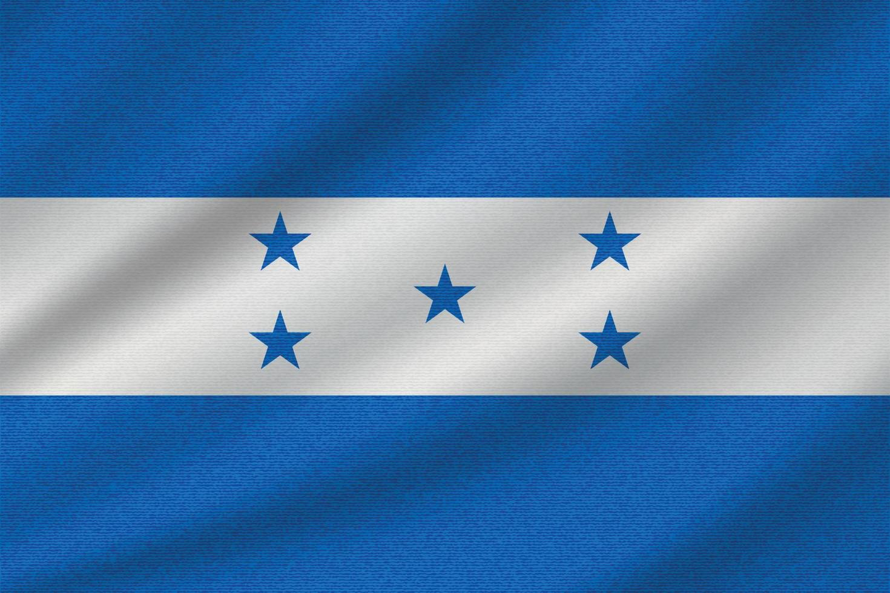
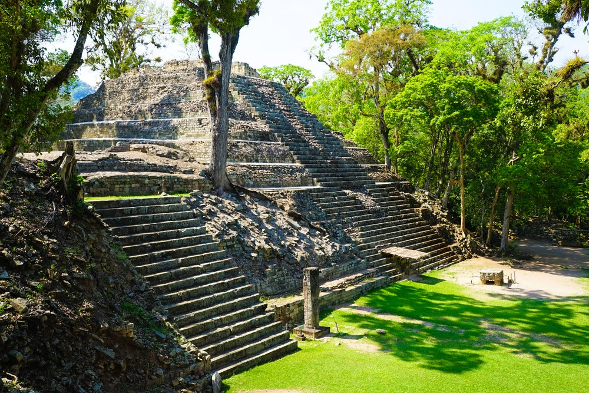
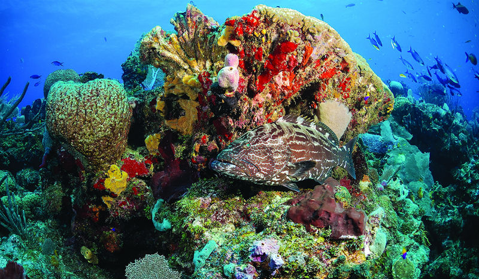
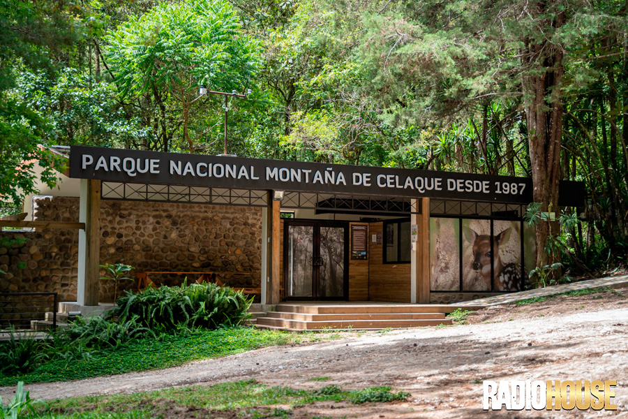

Descubre la belleza de nuestro pais

Descubre la belleza de nuestro pais

El alto grado de refinamiento que alcanzaron los Mayas de Copán se manifiesta de manera especial en la escultura en relieve que adorna sus edificios. La calidad artística de las esculturas mosaicas, los altares y esculturas tridimensionales talladas en piedra distinguen a Copán del resto de las ciudades Mayas.

Los Cayos Cochinos son un archipiélago de islas y cayos que está formado por dos pequeñas islas y 14 cayos más pequeños de origen coralino situados 30 kilómetros al noreste de La Ceiba en la costa norte de Honduras.

Es un sitio natural protegido, situado en la República de Honduras, formado por montañas, mesetas, bosque nuboso y en donde se localiza el punto más alto del país Centroamericano.